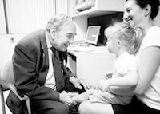
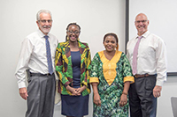

50 Years of Inclusion
Some 50 years ago, the first elements of today's Institute for Community Inclusion, were formed as the Developmental Evaluation Clinic (At Boston Children's Hospital). In the years following, the modern ICI blossomed into leading disability focused training and research organization that you see today. Join us for a year of special events, celebrating 50 years of inclusion. To keep updated on our developing schedule, feel free join our mailing list, follow us on social media, and check in on our events calendar.
Upcoming #ICI50 Events
50th Anniversary Open House Celebration
Wed, June 20, 2018
4:00 PM – 7:00 PM EDT
Institute for Community Inclusion, UMass Boston
Join us for refreshments and drinks as we watch short videos, connect with friends, hear from people who’ve been with the UCEDD from the beginning, and learn more about today’s ICI.
Webinar Series: Expanding the Dialogue on Autism
Join us for this webinar series, in which we explore ways that people on the spectrum have overcome challenges to thrive in health care, community life, and more.
ICIers on the work of inclusion
David Helm, PhD
Kartik Trivedi
Nancy Hurley
John Butterworth, PhD

↓ Scroll down to view timeline ↓
-
 President John F. Kennedy appoints the "President's Panel on Mental Retardation" in 1961. This leads to new legislation funding university-based developmental disability research centers in each state.
Amendments to the Social Security Act increase services for maternal and child health, and fund studies in each state on the status of services for people with mental retardation (now called intellectual and developmental disabilities).
President John F. Kennedy appoints the "President's Panel on Mental Retardation" in 1961. This leads to new legislation funding university-based developmental disability research centers in each state.
Amendments to the Social Security Act increase services for maternal and child health, and fund studies in each state on the status of services for people with mental retardation (now called intellectual and developmental disabilities).
-
Children's Hospital (now Boston Children's Hospital) obtains funding for constructing 2 floors in the new Fegan Building to be devoted to clinical services for people with developmental disabilities.
-
The Developmental Evaluation Clinic (DEC) at Children's Hospital opens its doors. Dr. Allen C. Crocker is the founder and first director of the DEC, which later grows into the Institute for Community Inclusion (ICI).
-
Grants that fund the DEC are received from the federal departments of Maternal and Child Health and Social Rehabilitation Services.
-
Staffing grows to 17 professionals representing 10 disciplines. Collaboration with area universities is started.
-
Clinical and training programs grow. Clinical services include comprehensive “primary evaluations” delivered by interdisciplinary teams to 4–8 children a week.
-
“Down I” program combines research and clinical services for young children who have Down syndrome. A demonstration preschool classroom opens for children with disabilities in collaboration with the Massachusetts Department of Education and Mental Health.
-
William (Bill) Kiernan, current dean of the School for Global Inclusion and Social Development at UMass Boston, and director of ICI from 1993 to 2017, is hired as a research associate at Children's.
-
Massachusetts Chapter 766 is passed, guaranteeing all children the right to a free, appropriate public education. It is the first USA special education law, and becomes the model for later federal legislation.
-
The Children's Hospital Work Experience Program (WEP) begins. The WEP provides intensive training and supervision for young adults with disabilities who are placed in various departments at the hospital. This program continues today.
-
ICI receives a state contract for developing modern medical services at the Wrentham State School (now Wrentham Developmental Center), following a court ruling in a class action suit on behalf on the residents. The conditions at WSS are markedly improved.
-
DEC receives supported work contract from Bay State Skills Corporation to provide job training, work experience, and job placement for people with disabilities.
-
The DEC’s growing vocational rehabilitation team and employment researchers move to the Gardner House on the BCH campus. This unit becomes known as the Training and Research Institute for People with Disabilities (TRIPD).
-
Staff from the Training and Research Institute for People with Disabilities (TRIPD) works with the Boston College Campus School to start the BC Supported Employment Program.
-
ICI conducts its first national survey on day and employment services, fundeded by the Administration on Developmental Disabilities. Later named Access to Integrated Employment, this project continues today.
-
The Training and Research Institute for People with Disabilities (TRIPD) establishes its first office at UMass Boston.
-
The Americans with Disabilities Act (ADA) is passed.
-
The Center for Autism and Related Disabilities opens at Children’s Hospital.
-
The Training and Research Institute for People with Disabilities (TRIPD) is officially renamed the Institute for Community Inclusion (ICI).
-
Bill Kiernan is appointed the director of ICI.
-
ICI receives a federal grant to start its first Rehabilitation Research and Training Center, a 5-year project called the Center on Promoting Employment.
-
Community capacity-building projects (13 total) are created to develop long-term partnerships with at least 29 diverse community-based organizations in Massachusetts.
-
The Vision Rehabilitation Therapy program is funded. This program provides training and a graduate degree for professionals entering the field of Vision Studies, and will grow into the Vision Studies MEd at UMass Boston.
-
The National Service Inclusion Project is created, providing training and technical assistance to support individuals with disabilities participating in AmeriCorps, Senior Corps, and service learning opportunities.
-
The majority of ICI staff become UMass Boston employees.
-
ICI receives the National Center on Workforce Development grant from the federal Office of Disability Employment Policy.
-
ICI moves to the Park Plaza Building in Boston’s Back Bay neighborhood.
-
Think College is formally named, having grown from a 3-year grant from the federal Office of Special Education in 1997. The project focuses on improving access to higher education for young people with intellectual disabilities.
-
The State Employment Leadership Network (SELN) is established. This organization provides a forum for state developmental disabilities agencies to collaborate and receive technical assistance around employment practices.
-
ICI receives the first of multiple national research centers studying vocational rehabilitation, or VR. VR agencies support people with disabilities to find and keep jobs in their communities.
-
ICI receives the $9 million Research and Technical Assistance Center on Vocational Rehabilitation, funded by the National Institute on Disability, Independent Living, and Rehabilitation Research, and begins to develop learning collaboratives among VR agencies.
-
To honor his lifetime achievement and advocacy, Dr. Ludwik Szymanski, the first Director of Psychiatry (1967) for what is now known as ICI, was selected as the first recipient of the Leon Eisenberg Award at Boston Children's Hospital.
-
ICI’s National Service Inclusion Project is awarded the Engaging Veterans with Disabilities Initiative to support national service and volunteer programs to engage veterans with disabilities.
-
ICI in partnership with Mathematica Policy Research is awarded a $16.8 million project from the Rehabilitation Services Administration, looking at ways to improve wages for people getting Social Security Disability Insurance.
-
 The founding director of the DEC, Dr. Allen Crocker, passes away at 85 years old.
-
ICI launches ExploreVR, a web-based portal to a range of VR data for planning, evaluation, and decision-making.
-
ICI receives the $3.25 million RRTC on Demand-Side Strategies, funded by the National Institute on Disability, Independent Living, and Rehabilitation Research.
-
 The School for Global Inclusion and Social Development at UMass Boston is established, with Bill Kiernan as founding dean.
The School for Global Inclusion and Social Development at UMass Boston is established, with Bill Kiernan as founding dean.
-
In Japan, ICI creates several disability leadership training programs targeting Japanese youth with disabilities, as well as disability and career services professionals from Japanese universities.
-
A UMass Boston gala raises $1.4M for the James T. Brett Chair in Disability and Workforce Development, to be based at the ICI.
-
 ICI moves to its current location at the Bayside Office Building, 150 Mt. Vernon Street, at Columbia Point in Dorchester, MA.
ICI moves to its current location at the Bayside Office Building, 150 Mt. Vernon Street, at Columbia Point in Dorchester, MA.
-
ICI is awarded the $9 million Job-Driven VR Technical Assistance Center, funded by the Rehabilitation Services Administration.
-
 ICI, the Association of University Centers on Disabilities, and Humanity & Inclusion win grants from the U.S. Department of State to bring professionals from Brazil, Kenya, Peru, Tanzania, and Uganda to the US for a 5-week intensive fellowship program.
-
ICI expands its vocational rehabilitation research, partnering with model demonstrations funded by the Rehabilitation Services Administration in Massachusetts, Maine, and Nebraska.
-
Tom Sannicandro becomes the new ICI director.
-
ICI receives a $600K field-initiated award from the National Institute on Disability, Independent Living, and Rehabilitation Research to study Progressive Employment, a strategy for helping people with disabilities enter the workforce.